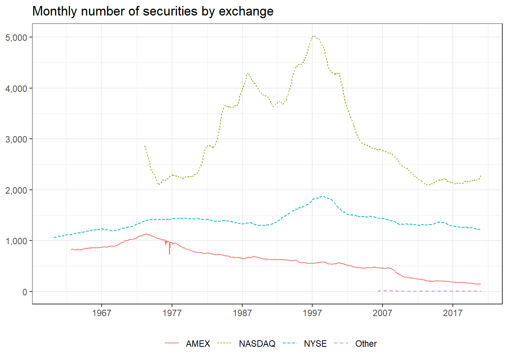

3 Accessing & Managing Financial Data
In this chapter, we propose a way to organize your financial data. Everybody, who has experience with data, is familiar with storing data in the form of various data formats like CSV, XLS, XLSX or other delimited value stores. Reading and saving data can become very cumbersome in the case of using different data formats, both across different projects, as well as across different programming languages. Moreover, storing data in delimited files often leads to problems with respect to column type consistency. For instance, date-type columns frequently lead to inconsistencies across different data formats and programming languages.
This chapter shows how to import different data sets (our data comes from the application programming interface (API) of Yahoo!Finance, a downloaded standard .csv files, an .xlsx file stored in a public Google drive repositories and an SQL database connection). We store all the data in one database which makes it easy to retrieve and share data later on.
First, we load the global packages that we use throughout this chapter. We load more more packages in the section where they are needed later on.
Moreover, we initially define the date range for which we will fetch and store the financial data. In case you need another time frame, you simply need to adjust these dates. Our data starts with 1960 since most asset pricing studies use data from 1962 on.
3.1 Downloading Fama-French Data
We start by downloading some famous Fama-French factors and portfolios which are commonly used in empirical asset pricing. Fortunately, there is a neat package by Nelson Areal that allows us to easily access the data: the frenchdata package provides functions to download and read data sets from Prof. Kenneth French finance data library.
We can use the main function of the package to download monthly Fama-French factors. Note that we have to do some manual work to correctly parse all the columns and scale them appropriately as the raw Fama-French data comes in very unpractical data format. For precise descriptions of the variables we suggest you consult Prof. Kenneth French finance data library directly.
factors_ff_monthly <- download_french_data("Fama/French 3 Factors")$subsets$data[[1]] %>%
transmute(
month = floor_date(ymd(paste0(date, "01")), "month"),
rf = as.numeric(RF) / 100,
mkt_excess = as.numeric(`Mkt-RF`) / 100,
smb = as.numeric(SMB) / 100,
hml = as.numeric(HML) / 100
) %>%
filter(month >= start_date & month <= end_date)With the same function, it is straight-forward to also download the corresponding daily Fama-French factors.
factors_ff_daily <- download_french_data("Fama/French 3 Factors [Daily]")$subsets$data[[1]] %>%
transmute(
date = ymd(date),
rf = as.numeric(RF) / 100,
mkt_excess = as.numeric(`Mkt-RF`) / 100,
smb = as.numeric(SMB) / 100,
hml = as.numeric(HML) / 100
) %>%
filter(date >= start_date & date <= end_date)In a subsequent chapter, we also use the 10 monthly industry portfolios, so let us fetch that data, too.
industries_ff_monthly <- download_french_data("10 Industry Portfolios")$subsets$data[[1]] %>%
mutate(month = floor_date(ymd(paste0(date, "01")), "month")) %>%
mutate(across(where(is.numeric), ~ . / 100)) %>%
select(month, everything(), -date) %>%
filter(month >= start_date & month <= end_date)It is worth take a look at all available portfolio return time series from Kenneth French homepage. The package makes this easy by calling frenchdata::get_french_data_list().
3.2 The q-factors: download and read-in .csv files
In recent years, the academic discourse experienced the rise of alternative factor portfolios, e.g. in the form of the Hou, Xue, Zhang (2015) q-factor model. We refer to the extended background information provided by the original authors for further information. The q factor returns can be downloaded directly from the authors homepage from within read_csv().
factors_q_monthly <- read_csv("http://global-q.org/uploads/1/2/2/6/122679606/q5_factors_monthly_2020.csv") %>%
mutate(month = as.Date(paste(year, month, "01", sep = "-"))) %>%
select(-R_F, -R_MKT, -year) %>%
rename_with(~ gsub("R_", "", .)) %>%
rename_with(~ str_to_lower(.)) %>%
mutate(across(-month, ~ . / 100)) %>%
filter(month >= start_date & month <= end_date)3.3 Macroeconomic predictors: Goyal-Welchs .xlsx files
Our next data source is a set of macro variables that are often used as predictors for the equity premium. Goyal & Welch (2007) comprehensively reexamine the performance of variables that have been suggested by the academic literature to be good predictors of the equity premium. The authors host the data updated to 2020 on Amit Goyal’s website. Since the data is an XLSX file stored in a public Google drive location, we need additional packages to access the data directly from our R session.
Usually, you need to authenticate if you interact with Google drive directly in R. Since the data is stored via a public link, we can proceed without any authentication.
The drive_download() function from the googledrive package allows us to download the data and store it locally.
drive_download("https://drive.google.com/file/d/1ACbhdnIy0VbCWgsnXkjcddiV8HF4feWv/view",
path = "data/macro_predictors.xlsx",
overwrite = TRUE
)Next, we read in the data and transform the columns to the variables that we later use.
macro_predictors <- read_xlsx("data/macro_predictors.xlsx", sheet = "Monthly") %>%
mutate(month = ym(yyyymm)) %>%
filter(month >= start_date & month <= end_date) %>%
mutate(across(where(is.character), as.numeric)) %>%
mutate(
IndexDiv = Index + D12,
logret = log(IndexDiv) - log(lag(IndexDiv)),
Rfree = log(Rfree + 1),
rp_div = lead(logret - Rfree, 1), # Future excess market return
dp = log(D12) - log(Index), # Dividend Price ratio
dy = log(D12) - log(lag(Index)), # Dividend Yield
ep = log(E12) - log(Index), # Earnings Price ratio
de = log(D12) - log(E12), # Dividend Payout Ratio
tms = lty - tbl, # Term Spread
dfy = BAA - AAA
) %>% # Default yield spread
select(month, rp_div, dp, dy, ep, de, svar,
bm = `b/m`, ntis, tbl, lty, ltr,
tms, dfy, infl
) %>%
drop_na()Finally, after reading in the macro predictors to our memory, we remove the raw data file from our temporary storage.
file.remove("data/macro_predictors.xlsx")## [1] TRUE3.4 Setting-Up a Database
Now that we have downloaded some data from the web into the memory of our R session, let us set up a database to store that information for future use. There are many ways to set-up and organize a database, depending on the use case. For our purpose, the most efficient ways is to use an SQLite database which is the C-language library that implements a small, fast, self-contained, high-reliability, full-featured, SQL database engine. Note that SQL (Structured Query Language) is a standard language for accessing and manipulating databases and it heavily inspired dplyr functions. We refer to this tutorial for more information to SQL.
There are two packages that make working with SQLite in R very simple: RSQLite embeds the SQLite database engine in R and dbplyr is the database back-end for dplyr. These packages allow to set up a database to remotely store tables and use these remote database tables as if they are in-memory data frames by automatically converting dplyr into SQL. Check out the RSQLite and dbplyr vignettes for more information.
An SQLite database is super simple to create. The code below is really all there is. Note that we use the extended_types option to enable date types when storing and fetching data, otherwise date columns are stored as integer values.
tidy_finance <- dbConnect(SQLite(), "data/tidy_finance.sqlite", extended_types = TRUE)Next, we create a remote table with the monthly Fama-French factor data.
factors_ff_monthly %>%
dbWriteTable(tidy_finance, "factors_ff_monthly", ., overwrite = TRUE)We can use the remote table as if it were an in-memory data frame by building a connection via tbl().
factors_ff_monthly_db <- tbl(tidy_finance, "factors_ff_monthly")All dplyr calls are evaluated lazily, that is the data is not in the memory of our R session and actually the database does most of the work. You see that by noticing that the output below does not show the number of rows. In fact, the following code chunk only fetches the top 10 rows from the database for printing.
## # Source: lazy query [?? x 2]
## # Database: sqlite 3.37.0
## # [C:\Users\ncj140\Dropbox\Projects\tidy_finance\data\tidy_finance.sqlite]
## month rf
## <date> <dbl>
## 1 1960-01-01 0.0033
## 2 1960-02-01 0.0029
## 3 1960-03-01 0.0035
## 4 1960-04-01 0.0019
## # ... with more rowsIf we want to have the whole table in memory, then we need to collect() it.
## # A tibble: 732 x 2
## month rf
## <date> <dbl>
## 1 1960-01-01 0.0033
## 2 1960-02-01 0.0029
## 3 1960-03-01 0.0035
## 4 1960-04-01 0.0019
## # ... with 728 more rowsThe last couple of code chunks are really all there is to organize a simple database! You can also very easily share the SQLite database across devices and programming languages.
Before we move on to the next data source, let us also store the other four tables in our new SQLite database.
factors_ff_daily %>%
dbWriteTable(tidy_finance, "factors_ff_daily", ., overwrite = TRUE)
industries_ff_monthly %>%
dbWriteTable(tidy_finance, "industries_ff_monthly", ., overwrite = TRUE)
factors_q_monthly %>%
dbWriteTable(tidy_finance, "factors_q_monthly", ., overwrite = TRUE)
macro_predictors %>%
dbWriteTable(tidy_finance, "macro_predictors", ., overwrite = TRUE)From now on, all you need to do to access data which is stored in the database is to follow 3 steps: i) Establish the connection to the SQLite file, ii) call the file you want to extract and iii) collect it. For your convenience, the following steps show all you need in a compact fashion
# Minimal setup to load data into your R session memory from a fresh session
library(tidyverse)
library(RSQLite)
tidy_finance <- dbConnect(SQLite(), "data/tidy_finance.sqlite", extended_types = TRUE) # Connection sqlite file
dbListTables(tidy_finance) # Check in case you do not know the the tables names within the SQlite database
factors_q_monthly <- tbl(tidy_finance, "factors_q_monthly") # Call the desired file
factors_q_monthly <- factors_q_monthly %>% collect() # Collect the files3.5 Accessing WRDS
Wharton Research Data Services (WRDS) is the most widely used source for asset and firm-specific financial data used in an academic context. WRDS is a data platform that provides data validation, flexible delivery options and access to many different data sources. The data at WRDS is also organized in an SQL database, although they use the PostgreSQL engine. This database engine is just as easy to handle with R as SQLite. We use the RPostgres package to establish a connection to the WRDS database. Note that you could also use the odbc package to connect to a PostgreSQL database, but then you need to install appropriate drivers yourself. The RPostgres already contains a suitable driver.
To establish a connection, you use the following function. Note that you need to replace the user and password fields with your own credentials. We defined system variables for the purpose of this book because we obviously do not want to share our credentials with the rest of the world.
wrds <- dbConnect(
Postgres(),
host = "wrds-pgdata.wharton.upenn.edu",
dbname = "wrds",
port = 9737,
sslmode = "require",
user = Sys.getenv("user"),
password = Sys.getenv("password")
)3.6 Downloading and Preparing CRSP
The Center for Research in Security Prices (CRSP) provides the most widely used data for US stocks. We use the wrds connection object that we just created to first access monthly CRSP return data. Actually, we need 3 tables to get the desired data: (i) the CRSP monthly security file,
## # Source: table<"crsp"."msf"> [?? x 21]
## # Database: postgres [svoigt@wrds-pgdata.wharton.upenn.edu:9737/wrds]
## cusip permno permco issuno hexcd hsiccd date bidlo askhi prc vol
## <chr> <dbl> <dbl> <dbl> <dbl> <dbl> <date> <dbl> <dbl> <dbl> <dbl>
## 1 68391610 10000 7952 10396 3 3990 1985-12-31 NA NA NA NA
## 2 68391610 10000 7952 10396 3 3990 1986-01-31 -2.5 -4.44 -4.38 1771
## 3 68391610 10000 7952 10396 3 3990 1986-02-28 -3.25 -4.38 -3.25 828
## 4 68391610 10000 7952 10396 3 3990 1986-03-31 -3.25 -4.44 -4.44 1078
## # ... with more rows, and 10 more variables: ret <dbl>, bid <dbl>, ask <dbl>,
## # shrout <dbl>, cfacpr <dbl>, cfacshr <dbl>, altprc <dbl>, spread <dbl>,
## # altprcdt <date>, retx <dbl>- the identifying information,
## # Source: table<"crsp"."msenames"> [?? x 21]
## # Database: postgres [svoigt@wrds-pgdata.wharton.upenn.edu:9737/wrds]
## permno namedt nameendt shrcd exchcd siccd ncusip ticker comnam shrcls
## <dbl> <date> <date> <dbl> <dbl> <dbl> <chr> <chr> <chr> <chr>
## 1 10000 1986-01-07 1986-12-03 10 3 3990 68391610 OMFGA OPTIMU~ A
## 2 10000 1986-12-04 1987-03-09 10 3 3990 68391610 OMFGA OPTIMU~ A
## 3 10000 1987-03-10 1987-06-11 10 3 3990 68391610 OMFGA OPTIMU~ A
## 4 10001 1986-01-09 1993-11-21 11 3 4920 39040610 GFGC GREAT ~ <NA>
## # ... with more rows, and 11 more variables: tsymbol <chr>, naics <chr>,
## # primexch <chr>, trdstat <chr>, secstat <chr>, permco <dbl>, compno <dbl>,
## # issuno <dbl>, hexcd <dbl>, hsiccd <dbl>, cusip <chr>and (iii) the delisting information.
## # Source: table<"crsp"."msedelist"> [?? x 19]
## # Database: postgres [svoigt@wrds-pgdata.wharton.upenn.edu:9737/wrds]
## permno dlstdt dlstcd nwperm nwcomp nextdt dlamt dlretx dlprc
## <dbl> <date> <dbl> <dbl> <dbl> <date> <dbl> <dbl> <dbl>
## 1 10000 1987-06-11 560 0 0 1987-06-12 0.219 0 -0.219
## 2 10001 2017-08-03 233 0 0 NA 13.1 0.0116 0
## 3 10002 2013-02-15 231 35263 1658 NA 3.01 0.0460 0
## 4 10003 1995-12-15 231 10569 8477 NA 5.45 0.0137 0
## # ... with more rows, and 10 more variables: dlpdt <date>, dlret <dbl>,
## # permco <dbl>, compno <dbl>, issuno <dbl>, hexcd <dbl>, hsiccd <dbl>,
## # cusip <chr>, acperm <dbl>, accomp <dbl>We use the three remote tables to fetch the data that we want to put into our local database. Just as above, the idea is that we let the WRDS database do all the work and just download the data that we actually need. We apply common filters and data selection criteria to narrow down our data of interest. You can read up in the great textbook of Bali, Engel & Murray (2016) (BEM) for an extensive discussion on the filters which we apply in the code below.
crsp_monthly <- msf_db %>%
# Keep only data in time window of interest
filter(date >= start_date & date <= end_date) %>%
# Keep only relevant share codes
inner_join(msenames_db %>%
filter(shrcd %in% c(10, 11)) %>% # US listed stocks
select(permno, exchcd, siccd, namedt, nameendt), by = c("permno")) %>%
# Check that the information is valid
filter(date >= namedt & date <= nameendt) %>%
# Add delisting information (i.e. delisting reason and return) by month
mutate(month = floor_date(date, "month")) %>%
left_join(msedelist_db %>%
select(permno, dlstdt, dlret, dlstcd) %>%
mutate(month = floor_date(dlstdt, "month")), by = c("permno", "month")) %>%
# Keep only variables of interest
select(
permno, # Security identifier
date, # Date of the observation
month, # Month of the observation
ret, # Return
shrout, # Shares outstanding (in thousands)
altprc, # Last traded price in a month
exchcd, # Exchange code
siccd, # Industry code
dlret, # Delisting return
dlstcd # Delisting code
) %>%
mutate(
month = as.Date(month),
shrout = shrout * 1000
) %>%
collect()Now, we have all the relevant monthly return data in memory and proceed with preparing the data for future analyses. We perform the preparation step at the current stage since we want to avoid executing the same mutations every time we use the data in subsequent chapters.
The first additional variable we create is market capitalization (mktcap). Note that we keep market cap in millions of US dollars just for convenience (we do not want to print huge numbers in our figures and tables).
crsp_monthly <- crsp_monthly %>%
mutate(
mktcap = abs(shrout * altprc) / 1000000, # market cap in millions of dollars
mktcap = if_else(mktcap == 0, as.numeric(NA), mktcap)
) # 0 market cap makes conceptually no sense, so we set it to missingThe next variable that we frequently use is the one-month lagged market capitalization. Lagged market capitalization is typically used to compute value-weighted portfolios, as we demonstrate in a later chapter. The most simple and consistent way to add a column with lagged market cap values is to add one month to each observation and then join the information to our monthly CRSP data.
mktcap_lag <- crsp_monthly %>%
mutate(month = month %m+% months(1)) %>% # Add one month (%m+% takes care of date subtleties)
select(permno, month, mktcap_lag = mktcap)
crsp_monthly <- crsp_monthly %>%
left_join(mktcap_lag, by = c("permno", "month"))If you wonder why we not simple use the lag() function, e.g. via crsp_monthly %>% group_by(permno) %>% mutate(mktcap_lag = lag(mktcap)) take a look at the exercises.
Next, we follow BEM in transforming listing exchange codes to explicit exchange names.
crsp_monthly <- crsp_monthly %>%
mutate(exchange = case_when(
exchcd %in% c(1, 31) ~ "NYSE",
exchcd %in% c(2, 32) ~ "AMEX",
exchcd %in% c(3, 33) ~ "NASDAQ",
TRUE ~ "Other"
))Similarly, we transform industry codes to industry descriptions following BEM.
crsp_monthly <- crsp_monthly %>%
mutate(industry = case_when(
siccd >= 1 & siccd <= 999 ~ "Agriculture",
siccd >= 1000 & siccd <= 1499 ~ "Mining",
siccd >= 1500 & siccd <= 1799 ~ "Construction",
siccd >= 2000 & siccd <= 3999 ~ "Manufacturing",
siccd >= 4000 & siccd <= 4899 ~ "Transportation",
siccd >= 4900 & siccd <= 4999 ~ "Utilities",
siccd >= 5000 & siccd <= 5199 ~ "Wholesale",
siccd >= 5200 & siccd <= 5999 ~ "Retail",
siccd >= 6000 & siccd <= 6799 ~ "Finance",
siccd >= 7000 & siccd <= 8999 ~ "Services",
siccd >= 9000 & siccd <= 9999 ~ "Public",
TRUE ~ "Missing"
))We also construct returns adjusted for delistings as described by BEM. After this transformation, we can drop the delisting returns and codes.
crsp_monthly <- crsp_monthly %>%
mutate(ret_adj = case_when(
is.na(dlstcd) ~ ret,
!is.na(dlstcd) & !is.na(dlret) ~ dlret,
dlstcd %in% c(500, 520, 580, 584) |
(dlstcd >= 551 & dlstcd <= 574) ~ -0.30,
dlstcd == 100 ~ ret,
TRUE ~ -1
)) %>%
select(-c(dlret, dlstcd))Next, we compute excess returns by subtracting the monthly risk-free rate provided by our Fama-French data. As we base all our analyses on the excess returns, we can drop adjusted returns and the risk-free rate from our tibble.
crsp_monthly <- crsp_monthly %>%
left_join(factors_ff_monthly %>% select(month, rf), by = "month") %>%
mutate(
ret_excess = ret_adj - rf,
# Ensure that excess returns are bounded by -1 from below
ret_excess = pmax(ret_excess, -1)
) %>%
select(-ret_adj, -rf)Since excess returns and market capitalization are crucial for all our analyses, we can safely exclude all observations with missing returns or market capitalization.
Finally, we store the monthly CRSP file in our database.
crsp_monthly %>%
dbWriteTable(tidy_finance, "crsp_monthly", ., overwrite = TRUE)3.7 The CRSP sample
Before we move on to other data sources, let us look at some descriptive statistics of the CRSP sample which is our main source for stock returns. The next figure shows the monthly number of securities by listing exchange over time. NYSE has the longest history in the data, but NASDAQ exhibits a considerable large number of stocks. The number of stocks on AMEX is decreasing steadily over the last couple of decades. By the end of 2020, there are 2300 stocks on NASDAQ, 1247 on NYSE, 148 on AMEX and only 1 belong to the other category.
crsp_monthly %>%
count(exchange, date) %>%
ggplot(aes(x = date, y = n, color = exchange, linetype = exchange)) +
geom_line() +
labs(
x = NULL, y = NULL, color = NULL, linetype = NULL,
title = "Monthly number of securities by exchange"
) +
scale_x_date(date_breaks = "10 years", date_labels = "%Y") +
scale_y_continuous(labels = comma) +
theme_bw()
Next, we look at the aggregate market capitalization of the respective listing exchanges. To ensure that we look at meaningful data which is comparable over time, we adjust the nominal values for inflation. We use the already familiar tidyquant package to fetch consumer price index (CPI) data from the Federal Reserve Economic Data (FRED).
library(tidyquant)
cpi_monthly <- tq_get("CPIAUCNS",
get = "economic.data",
from = start_date, to = end_date
) %>%
transmute(
month = floor_date(date, "month"),
cpi = price / price[month == max(crsp_monthly$month)]
)As the CPI data might come in handy at some point, we also put it into our local database.
cpi_monthly %>%
dbWriteTable(tidy_finance, "cpi_monthly", ., overwrite = TRUE)In fact, we can use the tables in our database to calculate aggregate market caps by listing exchange and plot it just as if it were in memory. All values are in end of year(end_date) dollars to ensure inter-temporal comparability. NYSE listed stocks have by far the largest market capitalization, followed by NASDAQ listed stocks.
tbl(tidy_finance, "crsp_monthly") %>%
left_join(tbl(tidy_finance, "cpi_monthly"), by = "month") %>%
group_by(month, exchange) %>%
summarize(
securities = n_distinct(permno),
mktcap = sum(mktcap, na.rm = TRUE) / cpi
) %>%
collect() %>%
mutate(month = as.Date(month)) %>%
ggplot(aes(x = month, y = mktcap / 1000, color = exchange, linetype = exchange)) +
geom_line() +
labs(
x = NULL, y = NULL, color = NULL, linetype = NULL,
title = "Monthly total market value (billions of Dec 2020 Dollars) by listing exchange"
) +
scale_x_date(date_breaks = "10 years", date_labels = "%Y") +
scale_y_continuous(labels = comma) +
theme_bw()Next, we look at the same descriptive statistics by industry. The figure below plots the number of stocks in the sample for each of the SIC industry classifiers. For most of the sample period, the largest share of stocks are apparently in Manufacturing albeit the number peaked somewhere in the 90s. The number of firms associated with public administration seems to the the only category on the rise in recent years, even surpassing Manufacturing at the end of our sample period.
crsp_monthly_industry <- crsp_monthly %>%
left_join(cpi_monthly, by = "month") %>%
group_by(month, industry) %>%
summarize(
securities = n_distinct(permno),
mktcap = sum(mktcap) / mean(cpi),
.groups = "drop"
) %>%
ungroup()
crsp_monthly_industry %>%
ggplot(aes(x = month, y = securities, color = industry, linetype = industry)) +
geom_line() +
labs(
x = NULL, y = NULL, color = NULL, linetype = NULL,
title = "Monthly number of securities by industry"
) +
scale_x_date(date_breaks = "10 years", date_labels = "%Y") +
scale_y_continuous(labels = comma) +
theme_bw()
crsp_monthly_industry %>%
ggplot(aes(x = month, y = mktcap / 1000, color = industry, linetype = industry)) +
geom_line() +
labs(
x = NULL, y = NULL, color = NULL, linetype = NULL,
title = "Monthly total market value (billions of Dec 2020 Dollars) by industry"
) +
scale_x_date(date_breaks = "10 years", date_labels = "%Y") +
scale_y_continuous(labels = comma) +
theme_bw()3.8 Accessing daily CRSP data
Before we turn to Compustat data, we also want to provide a proposal for downloading daily CRSP data. While the monthly data from above typically fits easily into your memory and can be downloaded in a meaningful amount of time, this is usually not true for daily return data. The daily CRSP data file is substantially larger than monthly data and can easily exceed 20GB. This has two important implications: you cannot hold all the daily return data in your memory (hence it is not possible to copy the entire dataset to your local database) and in our experience the download usually crashes (or never stops) because it is too much data for the WRDS cloud to prepare and send to your R session.
There is a simple solution to this challenge. As with many ‘big data’ problems, you can simply split up the big task into many small tasks that are easy to handle. That is, instead of downloading data about many stocks all at once, download the data in small batches for each stock consecutively. Such operations can be implemented in for loops where we download, prepare and store the data for a single stock in each iteration. This operation might nonetheless take a couple of hours, so you have to be patient either way. Eventually, we end up with more than 68 million rows of daily return data. Note that we only store the identifying information that we actually need, namely permno, date, month and excess returns. We thus ensure that our local database does not explode and later on we can load the full daily data into memory.
dsf_db <- tbl(wrds, in_schema("crsp", "dsf"))
permnos <- tbl(tidy_finance, "crsp_monthly") %>%
distinct(permno) %>%
pull()
progress <- txtProgressBar(min = 0, max = length(permnos), initial = 0, style = 3)
for (j in 1:length(permnos)) {
permno_sub <- permnos[j]
crsp_daily_sub <- dsf_db %>%
filter(permno == permno_sub &
date >= start_date & date <= end_date) %>%
select(permno, date, ret) %>%
collect() %>%
drop_na()
if (nrow(crsp_daily_sub)) {
crsp_daily_sub <- crsp_daily_sub %>%
mutate(month = floor_date(date, "month")) %>%
left_join(factors_ff_daily %>%
select(date, rf), by = "date") %>%
mutate(
ret_excess = ret - rf,
ret_excess = pmax(ret_excess, -1)
) %>%
select(permno, date, month, ret_excess)
if (j == 1) {
overwrite <- TRUE
append <- FALSE
} else {
overwrite <- FALSE
append <- TRUE
}
crsp_daily_sub %>%
dbWriteTable(tidy_finance, "crsp_daily", ., overwrite = overwrite, append = append)
}
setTxtProgressBar(progress, j)
}
close(progress)
crsp_daily_db <- tbl(tidy_finance, "crsp_daily")
crsp_daily_db %>% count() # contains 68,895,667 rows3.9 Merging CRSP with Compustat
As you have seen above, the CRSP data only contains stock-specific information, so we need to tap another source for firm financials. These financial information are an important source of information that we use in portfolio analyses later on. The commonly used source for firm financial information is Compustat, which is a global data provider that provides financial, statistical and market information on active and inactive companies throughout the world.
Unfortunately, CRSP and Compustat use different keys to identify stocks and firms. CRSP uses permno for stocks, while Compustat uses gvkey to identify firms. Fortunately, there is a curated matching table on WRDS that allows us to merger CRSP and Compustat, so we create a connection to this remote table.
ccmxpf_linktable_db <- tbl(wrds, "ccmxpf_linktable")However, we need to make sure that we keep only relevant links, again following the description outlined in BEM.
ccmxpf_linktable <- ccmxpf_linktable_db %>%
filter(linktype %in% c("LU", "LC") &
linkprim %in% c("P", "C") &
usedflag == 1) %>%
select(permno = lpermno, gvkey, linkdt, linkenddt) %>%
collect() %>%
# Currently active links have no end date
mutate(linkenddt = replace_na(linkenddt, Sys.Date()))
ccmxpf_linktable## # A tibble: 30,159 x 4
## permno gvkey linkdt linkenddt
## <dbl> <chr> <date> <date>
## 1 25881 001000 1970-11-13 1978-06-30
## 2 10015 001001 1983-09-20 1986-07-31
## 3 10023 001002 1972-12-14 1973-06-05
## 4 10031 001003 1983-12-07 1989-08-16
## # ... with 30,155 more rowsWe use this link table to create a new table where we have a mapping between stock identifier, firm identifier and month. We then add these links to the Compustat gvkey to our monthly stock data.
ccm_links <- crsp_monthly %>%
inner_join(ccmxpf_linktable, by = "permno") %>%
filter(!is.na(gvkey) & (date >= linkdt & date <= linkenddt)) %>%
select(permno, gvkey, date)
crsp_monthly <- crsp_monthly %>%
left_join(ccm_links, by = c("permno", "date"))As a last step, we update the prepared monthly CRSP file with the linking information in our local database.
crsp_monthly %>%
dbWriteTable(tidy_finance, "crsp_monthly", ., overwrite = TRUE)3.10 Preparing Compustat Data
As we mentioned above, we use firm fundamentals provided by Compustat through WRDS. Compustat North America is a database of U.S. and Canadian fundamental and market information on active and inactive publicly held companies. For most companies, annual history is available back to 1950 and quarterly as well as monthly history goes back to 1962.
For most of our applications, we use annual information provided via the funda table.
funda_db <- tbl(wrds, "funda")We follow the typical filter conventions and pull only data that we actually need.
compustat <- funda_db %>%
filter(
# Get only industrial fundamental data (i.e. ignore financial services)
indfmt == "INDL" &
# Get data in standard format (i.e. consolidated information in standard presentation)
datafmt == "STD" &
consol == "C" &
# Get only data in the desired time window
datadate >= start_date & datadate <= end_date
) %>%
# Select only relevant columns
select(
gvkey, # Firm identifier
datadate, # Date of the accounting data
seq, # Stockholders' equity
ceq, # Total common/ordinary equity
at, # Total assets
lt, # Total liabilities
txditc, # Deferred taxes and investment tax credit
txdb, # Deferred taxes
itcb, # Investment tax credit
pstkrv, # Preferred stock redemption value
pstkl, # Preferred stock liquidating value
pstk # Preferred stock par value
) %>%
# Fetch data from server into memory
collect()Next, we calculate the book value of preferred stock and equity inspired by the variable definition in Ken French’s data library.
compustat <- compustat %>%
mutate(
be = coalesce(seq, ceq + pstk, at - lt) +
coalesce(txditc, txdb + itcb, 0) -
coalesce(pstkrv, pstkl, pstk, 0),
# Negative or zero equity makes no sense because the firm would be dead
be = if_else(be <= 0, as.numeric(NA), be)
)We keep only the last available information for each firm-year group. Note that datadate refers to the time to which the corresponding financial refers to, not the date when it was made available to the public. If you wonder why there can be multiple observations for a firm in the same year, check out the exercises.
compustat <- compustat %>%
mutate(year = year(datadate)) %>%
group_by(gvkey, year) %>%
filter(datadate == max(datadate)) %>%
ungroup()We are already done preparing the firm fundamentals, so we can store them in our local database.
compustat %>%
dbWriteTable(tidy_finance, "compustat", ., overwrite = TRUE)Before we move on to the next data source, let us look at an interesting descriptive of our data. As the book value of equity plays a crucial role in many asset pricing applications, it is actually interesting to know how many of our stocks even have that piece of information. The next figure hence plots the share of securities with book equity values for each exchange. It turns out that the coverage is pretty bad for AMEX and NYSE listed stocks in the 60s, but hovers around 80% for all periods thereafter. We can ignore the erratic coverage of securities that belong to the other category since there are only a handful of them anyway in our sample.
crsp_monthly %>%
group_by(permno, year = year(month)) %>%
filter(date == max(date)) %>%
ungroup() %>%
left_join(compustat, by = c("gvkey", "year")) %>%
group_by(exchange, year) %>%
summarize(share = n_distinct(permno[!is.na(be)]) / n_distinct(permno)) %>%
ggplot(aes(x = year, y = share, color = exchange)) +
geom_line() +
labs(
x = NULL, y = NULL, color = NULL, linetype = NULL,
title = "End-of-year share of securities with book equity values by exchange"
) +
scale_y_continuous(labels = percent) +
theme_bw() +
coord_cartesian(ylim = c(0, 1))3.11 Managing SQLite Databases
When you drop database objects such as tables or delete data from tables, the database file size remains unchanged because SQLite just marks the deleted objects as free and reserves it for the future uses. As a result, the size of the database file always grows in size.
To optimize the database file, you can run the VACUUM command in the database which will rebuild the database and free up unused space. You can execute the command in the database using the dbSendQuery() function.
dbSendQuery(tidy_finance, "VACUUM")## <SQLiteResult>
## SQL VACUUM
## ROWS Fetched: 0 [complete]
## Changed: 0The VACUUM command actually does a couple of more clean up steps, which you can read up in this tutorial.